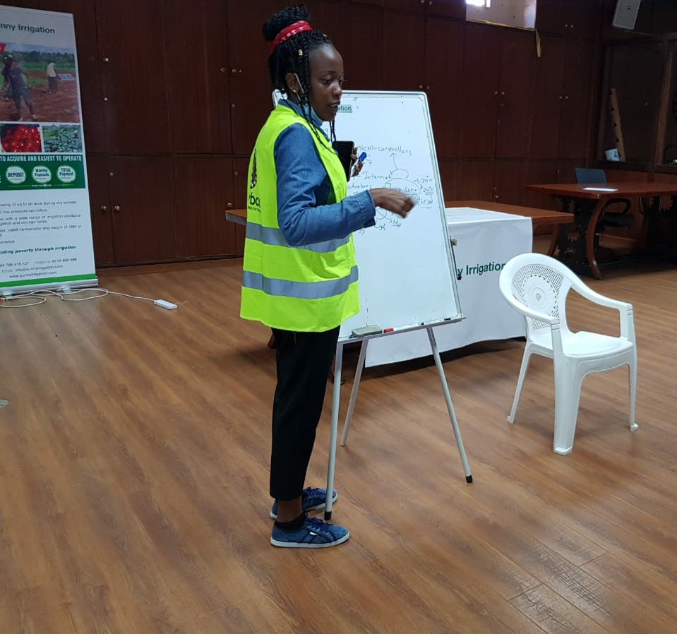

Engineer Anne

Computer and Electronics

Robotics
Programming
Beneficiaries

Hello and welcome to my cumulative portfolio for my Industrial Attachment at Gearbox, Kenya.The purpose of this portfolio is not only to display the projects that i have taken part in but also to show ho my skills have improved throughout my attachment period.Compared to the beginning of this attachment where I was always uestioning my ability to code as well as assemble simple projects and see their completion, I am now more confident in my skill set and I feel that i have undoubtedly improved.